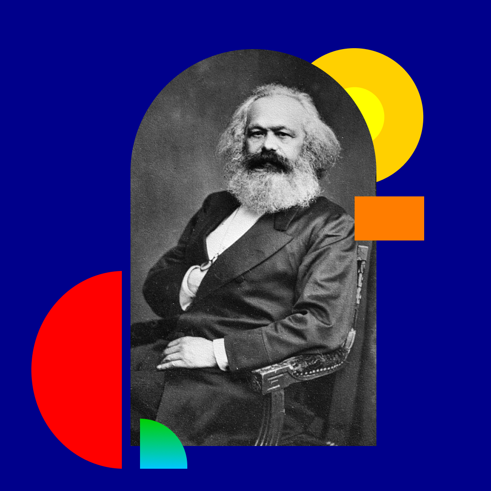
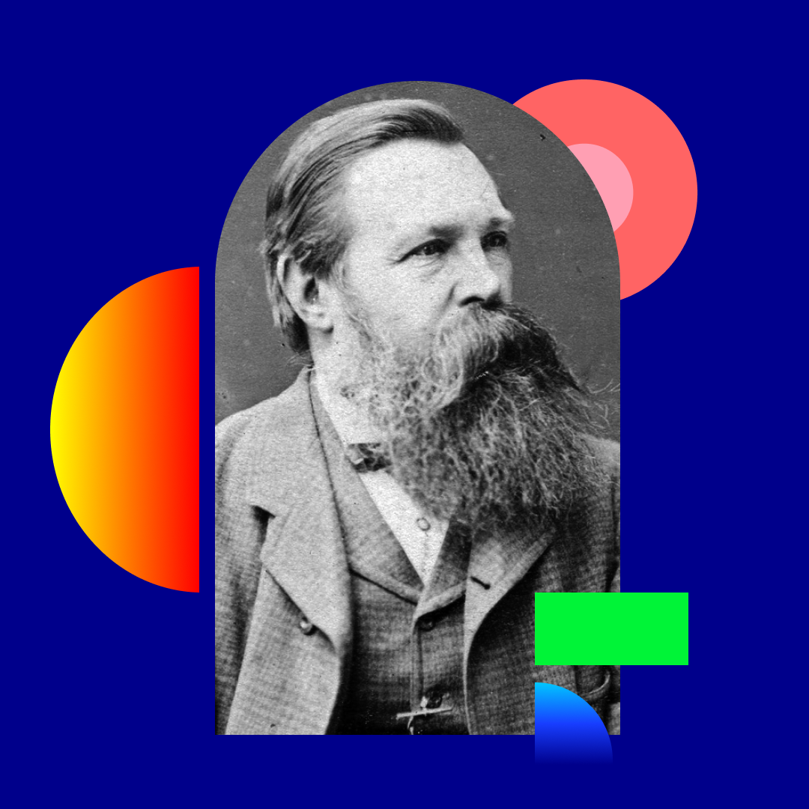

A Educação Profissional e Tecnológica no Brasil precisa dialogar com o trabalho e com os processos de profissionalização; entretanto, foi constituída para subordinar a formação dos trabalhadores ao mercado de trabalho. Mas como todo processo educativo, o escolar, em especial, é um campo em disputa, sobretudo entre dois grandes projetos: um que busca submeter suas finalidades aos interesses do mercado e outro que se apresenta em uma perspectiva de emancipação da classe trabalhadora.
Para entendermos esse processo de disputa de projetos educativos na EPT, é importante demarcar em nosso horizonte de que trabalho falamos, pois o trabalho se apresenta em duas grandes dimensões: uma dimensão constitutiva do ser humano, o trabalho em sua dimensão ontológica, ou seja, o trabalho que define a essência humana, e o trabalho nas formas históricas que ele assume, na atualidade como trabalho assalariado, na forma capital.
Algo pode ser caracterizado como ontológico quando se refere a sua própria essência. O termo ontológico refere-se à ontologia, um ramo da filosofia que busca compreender a natureza do ser. Neste trecho, a dimensão ontológica do trabalho refere-se a dimensão mais essencial do trabalho para os seres humanos.
De acordo com Frigotto (2001, p. 75) “trata-se de um modo de produção social da existência humana que foi se estruturando, desde o século XI, em contraposição ao modo de produção feudal, e que se caracteriza pela emergência da acumulação de capital e, em seguida, mediante esta acumulação, pelo surgimento da propriedade privada dos meios e instrumentos de produção”. Para Mészáros (2011), capital, trabalho assalariado e Estado constituem o sistema sociometabólico do capital.
Para Marx (1875), Engels (1877) e Saviani (2010), o trabalho é a atividade produtiva fundamental da existência humana. Pelo trabalho, o ser humano transforma a natureza e cria a si mesmo: é pelo trabalho que se constitui o ser social, prático, criador, trabalhador e histórico.
Karl Marx nasceu em Tréveris, em 5 de maio de 1818. Ele foi um importante filósofo alemão. De modo geral, ele refletiu e escreveu amplamente sobre sociedade, economia e política. Uma de suas teses principais argumenta que as sociedades se desenvolveram a partir da luta de classes. Marx é um intelectual muito importante para pensar a relação do trabalho na vida humana. Por conta de seus escritos, ele viveu no exílio junto de sua família. Ele morreu em Londres, em 14 de março de 1883.
Título: Karl Marx
Fonte: John Jabez Edwin Mayal/Instituto Internacional de História Social.
Elaboração: Prosa (2024).
Friedrich Engels nasceu em Barmen, em 28 de novembro de 1820. Ele também foi um filósofo importante. No início de sua vida atuou como empresário industrial. Nesse contexto, ele percebeu a precariedade da vida dos trabalhadores de fábricas. Junto de Karl Marx, fundou o socialismo científico, também chamado de Marxismo. Engels morreu em Londres, em 5 de agosto de 1895.
Título: Friedrich Engels
Fonte: William Hall.
Elaboração: Prosa (2024).
Dermeval Saviani nasceu em Santo Antônio da Posse (São Paulo), em 25 de dezembro de 1943. Ele é professor, filósofo e pedagogo. Ele é o idealizador da Pedagogia Histórico-Crítica. Nesta teoria pedagógica, ele defende o acesso ao conhecimento sistematizado e sua compreensão por parte do estudante como instrumento de reflexão e transformação da sociedade, em contraponto ao modelo conteudista de ensino. Demerval Saviani publicou vários livros e artigos sobre a relação entre trabalho e educação, influenciando assim o pensamento brasileiro sobre esse tema.
Título: Dermeval Saviani
Fonte: Elza Fiúza/Agência Brasil.
Elaboração: Prosa (2024).
A relação do ser humano com a natureza, transformando-a para atender às suas necessidades, é o que chamamos de trabalho.
Para Saviani (2007, p. 154),
[...] o homem não nasce homem. Ele forma-se homem. Ele não nasce sabendo produzir-se como homem. Ele necessita aprender a ser homem, precisa aprender a produzir sua própria existência.
Assim, nos tornamos homens e mulheres pelo trabalho, nos humanizamos pelo trabalho.
Quando separamos a força do trabalho do processo de produção e do produto do trabalho e a vendemos, chamamos o trabalho de emprego ou de trabalho assalariado; quando o trabalhador não se reconhece mais no produto do seu trabalho, chamamos essa situação de alienação. É assim que se apresenta o trabalho nas sociedades modernas dentro da estrutura capitalista.
Para o capitalismo, quanto mais o trabalhador se separa do produto de seu trabalho, distancia-se e não se reconhece nele, mais ainda é possível controlar sua força de trabalho e gerar lucros – que serão usufruídos por poucos.